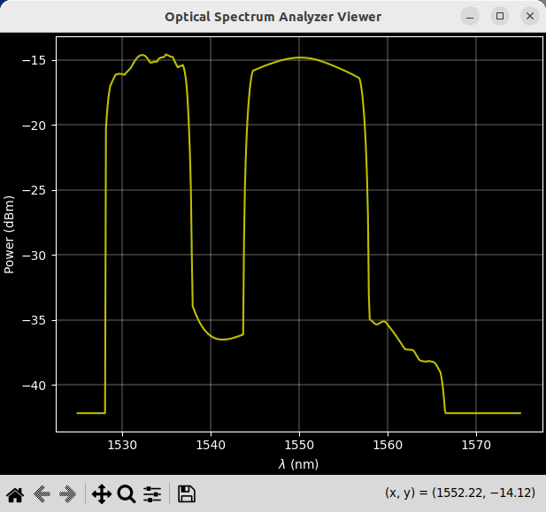

Primeros pasos#
En esta sección se presenta un flujo tradicional de comandos usados en un WSS para poner manos a la obra con w0sa.
Lanza w0sa con (no olvides activar el entorno virtual):
$ w0sa
Para acceder a los comandos disponibles tipea help y para ayuda sobre algún comando en particular help <command>. w0sa utiliza como entrada espectros ópticos extraidos desde un OSA real como archivos csv. Por lo tanto, el primer paso es asignar algún espectro con uno de los 9 puertos disponibles en el WSS. Con ls_ports se lista el estado actual de los puertos y con ls_spectrums es posible ver los espectros disponibles para asignar como entrada. Actualmente, los espectros disponibles de entrada siguen el formato de nombre: EDFA<current[mA]_r<OSA_resolution[nm]>_s<OSA_span[nm]>, donde <current[mA]> es la corriente de bombeo del EDFA, OSA_resolution[nm] y OSA_span[nm] corresponden a la resolución y span del OSA con los cuales fue extraido el espectro (archivo csv) respectivamente.
El siguiente comando asigna el espectro de entrada EDFA1000_r1.0_s50 al puerto 2 del WSS:
w0sa> SETP P2 -> EDFA1000_r1.0_s50
Con ls_ports se puede corroborar que el espectro haya sido efectivamente asignado al puerto 2.
El siguiente paso consiste en definir un plan de canales. El WSS finisar flexigrid cuenta con 386 slots de 12.5 GHz cada uno. Mediante el comando DCC (Define Custom Channels) es posible asignar slots a canales, de tal modo que DCC 1=1:8 significa que el canal 1 abarca desde el slot 1 al 8. A continuación se define un plan de 48 canales de 8 slots cada uno, es decir, un ancho de banda de 100.0 GHz por canal:
w0sa> DCC 1=1:8;2=9:16;3=17:24;4=25:32;5=33:40;6=41:48;7=49:56;8=57:64;9=65:72;10=73:80;11=81:90;12=91:96;13=97:104;14=105:112;15=113:120;16=121:128;17=129:136;18=137:144;19=145:152;20=153:160;21=161:168;22=169:176;23=177:184;24=185:192;25=193:200;26=201:208;27=209:216;28=217:221;29=222:232;30=233:240;31=241:248;32=249:256;33=257:264;34=265:272;35=273:280;36=281:290;37=291:296;38=297:304;39=305:312;40=313:320;41=321:328;42=329:336;43=337:344;44=345:352;45=353:360;46=361:368;47=369:376;48=377:384
Una vez definido el plan de canales, a través de URA es posible asignar una entrada para un determinado canal y la atenuación deseada (max 20.0 dB). El comando URA 1,2,6.0 asocia el canal 1 con el puerto 2 y realiza una atenuación de 6.0 dB en ese canal, es decir todos los slots que conforman el canal, son atenuados 6.0 dB. El comando siguiente asocia canales a puertos y define las atenuaciones:
Note
En caso de asignar un canal a un puerto vacío (sin espectro definido), por defecto ese puerto estará asociado a un espectro con potencia 0.0 dBm en todas las longitudes de onda. Al trabajar con el WSS real, esto es una buena práctica para alcanzar los niveles de atenuación deseados.
w0sa> URA 1,2,14.0;2,2,14.0;3,2,15.0;4,2,16.0;5,2,16.0;6,2,17.0;7,2,17.0;8,2,17.0;9,2,17.0;10,2,18.0;11,2,18.0;12,2,0.0;13,2,0.0;14,2,0.0;15,2,0.0;16,2,0.0;17,2,0.0;18,2,0.0;19,2,0.0;20,2,0.0;21,2,0.0;22,2,0.0;23,2,0.0;24,2,0.0;25,2,0.0;26,2,0.0;27,2,0.0;28,2,0.0;29,2,20.0;30,2,20.0;31,2,20.0;32,2,20.0;33,2,20.0;34,2,20.0;35,2,20.0;36,2,20.0;37,2,3.0;38,2,6.0;39,2,8.0;40,2,11.0;41,2,14.0;42,2,16.0;43,2,16.0;44,2,16.0;45,2,16.0;46,2,15.0;47,2,13.0;48,2,12.0
Para efectuar la configuración recién definida en el WSS, se debe ingresar:
w0sa> RSW
Ya realizada la actualización del WSS solo queda visualizar el espectro resultante con:
w0sa> OSA_SHOW
El espectro resultante luce así:
{kind=link}